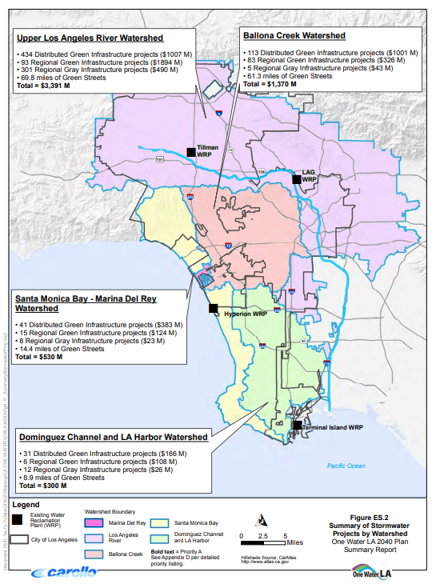
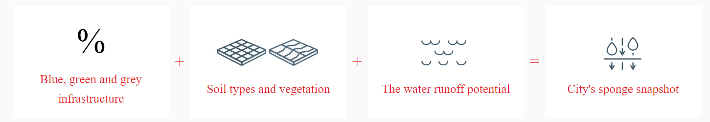
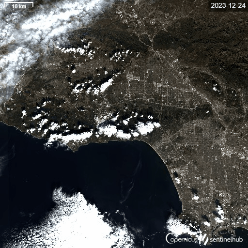

4 Policy
4.1 Summary
According to a CDP report on cities at risk of climate change (CDP 2023), the top five hazards that cities face include flooding, heat waves, rain storms, extreme hot days and droughts. Los Angeles is no stranger to such hazards, such as flooding. In February 2024, Los Angeles, along with other parts of California, faced a rare Level 4 of 4 risk of excessive rainfall (CNN 2024). This threat level means that the city is facing “life threatening flash and urban flash flooding”, in this case due to atmospheric rivers. In the first quarter of 2023, it was estimated that flooding caused approximately $30 billion in damages to the state of California (Cleanfax 2023).
Los Angeles, in order to better manage its water-related resources and hazards released the One Water LA 2040 Plan in 2018 (City of Los Angeles 2018). The Metropolitan outlined seven goals of which Goal 6 of “Increas[ing] climate resilience by planning for climate change mitigation and adaptation strategies in all City actions” is related to flooding. In terms of the United Nations Sustainable Development Goal (SDG), this is related mainly to Goal 11: Sustainable Cities and Communities of “making cities and human settlements inclusive, safe, resilient and sustainable”, along with Goal 13: Climate Action to “take urgent action to combat climate change and its impacts” (United Nations, n.d.).
The city’s stormwater planning approach aims for projects that improve water quality, augment water supply and mitigate flood risks. These include distributed and regional green infrastructure projects, that differ based on scale. The former nature-based solutions include bioretention cells, bioswales, catch basin retrofits while the latter includes capture-storage-use systems and nature-inspired-flow-through treatment wetlands. In addition, the city has plans to implement more grey infrastructure projects such as canals and reservoirs.
Summary of Stormwater Projects as detailed in the One Water LA 2040 Plan Summary Report. Source: City of Los Angeles (2018)
However, critics argue that Los Angeles’ water management strategy overly relies on grey infrastructure to quickly flush water away, neglecting the potential benefits of green infrastructure projects to absorb and store water (The Guardian 2023) as green infrastructure are seen to be 50% more cost effective than grey infrastructure (World Economic Forum 2022). In Los Angeles, even when green infrastructure projects are proposed, there are further concerns that they may not be equitably distributed or planned in locations with the ideal conditions for groundwater infiltration (Environment and Sustainability 2022).
To address these challenges, remote sensing could be a valuable tool for policy planning in the placement of nature-based solutions. The overall workflow would require a stocktake of the city’s green and blue infrastructure or the ability of areas to absorb water, followed by overlaying it with flood data to identify areas to implement nature-based solutions. Further extensions can be added to ensure partnership with different stakeholders and meet other SDGs.
4.2 Application
In 2023, Arup released the Global Sponge Cities Snapshot report to examine how “spongy” 10 cities are which relates to their ability to harvest and store water (Arup 2023). Its methodology to produce such a snapshot involved quantifying the amount of blue, green and grey infrastructure through machine learning of satellite imagery. Arup subsequently considered the quantity of each major hydrological soil type in each city before calculating the surface runoff.

Arup’s methodology to calculate the city’s sponge snapshot. Source: Arup (2023)
To reproduce such a snapshot, the following steps are required:
Step 1: Quantifying city’s blue, green and grey infrastructure.
Sentinel 2 or other remote sensing images can be obtained for the metropolitan area. Supervised classification or machine learning can be employed in order to classify the different land cover such as water bodies, vegetation, buildings, roads, etc.

Timelapse of Sentinel 2 images of Los Angeles. Source: Sentinel Hub (n.d.)
Step 2: Soil types and vegetation
The next step would be to factor in the soil type which would influence ground permeability and porosity. Hyperspectral imaging of the topsoil, combined with regression modelling, can be used to estimate the percentage of sand and clay in a bare field (Ewing et al. 2020). This can be done through the use of the visible and near-infrared bands to create a soil moisture map.
Step 3: Water runoff potential
A digital elevation model (DEM) can be used to generate the slope profile for Los Angeles. Through combining with land use and soil type, the water runoff potential for the area can be estimated (Mahmoud 2014).
Through Steps (1) to (3), by quantifying the city’s blue, green and grey infrastructure, factoring in the soil type and vegetation and water runoff potential, an index or map of the city’s ability to absorb and store water can be obtained. With the map, the idea is for authorities to understand the city’s profile and make better informed decisions in the implementation of nature-based solutions (Arup 2023). As an extension of Arup’s sponge snapshot, the following are other considerations to enhance authorities’ efforts in dealing with floods.
Consideration A: Flood maps and modelling
To obtain accurate and up-to-date flood maps, the use of synthetic aperture radar (SAR) images can be used (Brivio et al. 2002). Even if the satellite overpass may not coincide with the flood peak, integrating the map of inundated areas obtained through SAR with digital topographic data can help estimate flooded areas. Through overlaying the flood maps with the city’s sponge snapshot, authorities are able to identify areas affected severely by floods and with low capacity to store water as a priority area for intervention. Flood models can be run to examine the effect of placing these solutions. Alternatively, authorities are able to identify if there are any best practices in land use with regards to flood managements. This could possibly include large stretches of nature spaces that are able to hold water without inundating the surrounding areas.
Consideration B: Local efforts to mitigate floods
Homeowners in flood prone areas may take measures to floodproof their house such as elevating or dry flood-proofing their houses (Botzen et al. 2019). It is possible that homeowners could undertake unauthorised or unpermitted changes in flood infrastructure such as constructing new concrete structure or encroachments into floodplains that may compromise authorities’ efforts. Change detection, by comparing satellite images of different time periods will allow authorities to monitor if any such development is occurring and react accordingly.
Consideration C: Planning for connectivity, accessibility and liveability through space syntax
In addition to the SDG goals mentioned about sustainable cities and communities, and climate action, there is a potential to integrate the SDG goal of good health and well-being. Flood maps can be combined with spatial analysis techniques such as space syntax to provide insights into the connectivity, accessibility and spatial structure of urban area (Dursun 2007). Through integrating this data, authorities can ensure that the placement of nature-based solutions not only mitigate flooding but also contributing to creating more liveable environments such as more parks for people to enhance their quality of life.
Overall, the workflow presented above can aid authorities in site selection for nature-based solutions based on mitigation needs, while also considering other possible stakeholders and positive outcomes that can be accomplished as well.
4.3 Reflection
The above steps based on Arup’s report shows how remote sensing can be used to aid policymakers in creating a comprehensive map to make well-informed decisions on the areas most vulnerable to floods, best practices of areas that are able to mitigate flood effects, and possible areas to implement nature-based solutions. The addition of three other considerations shows that flooding is a complex issue with many other interconnected dimensions. This suggests that while remote sensing is valuable for policymakers, it is not a magic bullet. Stakeholders at different scales must be considered. Furthermore, for any measure implemented, it is essential to consider potential repercussions as well as possible opportunities such as liveability to integrate. Remote sensing is also not a one-off tool and can be used to periodically monitor the situation and effectiveness of measures implemented.
Although remote sensing can be informative, it is important to recognise there may be challenges that limits its usage in policy. Challenges include the complexity of processing data, analysing results and communication findings, which may be more difficult for people to comprehend compared to simple charts and tables. To increase its use in policy, more collaboration and coordination among data providers, researchers, authorities and the general public is needed to harness it better.